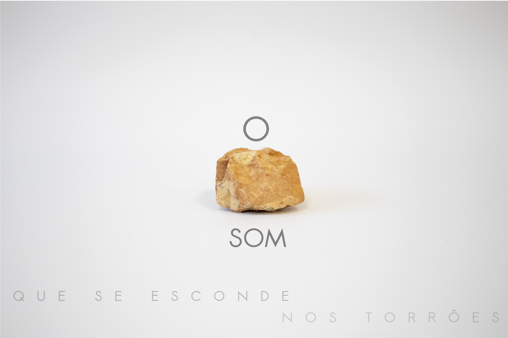

Livro

| Click na imgem pra acceder ao prototipo do livro (DESKTOP | TABLET)|
O som suscita uma reação imediata a quem o escuta e, usando a tecnologia do som associada aos torrões de terra, pretendem focar-se nos aspetos subtis destas matérias, recuperando e valorizando os sentidos e as perceções que escapam a todos diariamente.
Há aqui a possibilidade de potencializar o valor estético das coisas simples, como um torrão, através dispositivos e tecnologias de caráter doméstico, atuais e de acesso corrente (open source).
Este projeto posiciona-se como um convite à comunidade a explorar e desfrutar do seu território com o que tem ao alcance da mão.